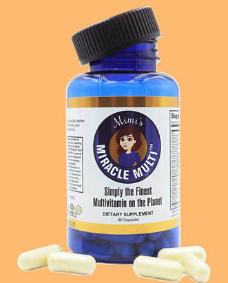

Multi Vitamin Benefits

Your doctor and those around you will tell you regularly that you need to take a multivitamin, because there are benefits of taking multivitamins, sometimes the focus is on the brand or a brand aimed at pregnant women. Leave us a comment for a moment.
Effectiveness of multivitamins
First of all, all multivitamins are made to the same standards regardless of the company. However, the end product can vary greatly from company to company. When looking for inexpensive brands such as B. Store-bought ones, each pill contains inferior binders, preservatives, and fillers. As a result, the actual amounts of vitamins do not enter your system. The higher quality pills add more vitamins to your system.
Here is a test to see how your vitamins stack up. At the end of this test, the whole pill should be dissolved. Put your pill in the bottom of a glass and fill it with water. Come back in about an hour and see how much is left. During this hour is the normal downtime of the pill in your body.
Some multivitamins may contain dangerous chemicals
But take a step back and be careful what you buy. Since these are not always natural vitamins, they are sometimes made chemically in the laboratory. For example, B12 is a fermentation product that uses cyanide. B3 is made from a combination of ammonia and formaldehyde. None of these items can be redeemed if given the choice. Maybe you should play it safe before you decide to drive them on the street.
Let’s take a look at what is usually found in a multivitamin and see how it can help your body:
1. Vitamin C: Supports immune support, helps the heart, and reduces the risk of cancer.
2. B Vitamins: These vitamins are said to help increase energy levels, increase food metabolism, and provide an overall feeling of general well-being.
3. Folic Acid: Helps in fetal development in pregnant women, but in all people, it helps the cardiovascular system.
4. Zinc: stimulates the immune system.
5. Calcium: strengthens bones and heart functions.
6. Vitamin D: Helps the liver and the body’s cleansing process.
The composition apart from the basic vitamins varies depending on the brand. Some contain lycopene, which has been linked to healthy eyes, heart, and prostate. Typically, the extra extras cost more and most people will experience little benefit.
Who should take a multivitamin?
Speaking of the benefits: Not everyone will benefit from a multivitamin supplement. If your current diet is already at acceptable levels and is full of vegetables and fruits, the benefits of multivitamins won’t have much impact on you. Your body stores only the vitamins and minerals it needs and has little. In general, when you eat a healthy diet, your body gets the vitamins and nutrients it needs. However, unhealthy fast food eaters should take a multivitamin as these diets do not provide complete nutrition.
A word of warning for those who take certain medications such as blood thinners. Certain vitamins can generally react with the medications you are taking. In this example, vitamin K would reverse the effects of warfarin. The same goes for herbal supplements. Check with your supplier or pharmacist to see if any of your supplements may be negative. Standard preparations such as horseradish and garlic can be safely combined.
If you are pregnant or planning to become pregnant, a standard multivitamin is not the best option for you. Instead, you should consider taking prenatal vitamins, which are designed to help your body during the pregnancy process.

Recommended Products